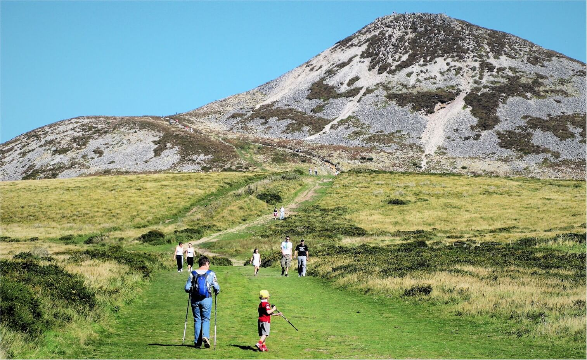

Walk the Garden of Ireland
From Mountains to the Irish Sea, Wicklow is blessed with some of Irelands most amazing sceneries. The Wicklow Hills offer the largest mountain area in Ireland. Wicklow has developed an extensive network of Walks and Trails for all to enjoy. With the Wicklow Way as backbone, see below some of the best Wicklow Walks.
BRAY HEAD LOOP
Grade: Moderate
Distance: 8km
Offers stunning views over the Irish Sea, Bray, the Dublin Bay and the Wicklow Mountains. The hill dominates the end of the promenade and the stone cross atop the hill is an iconic feature of the town. While the climb is not particularly daunting, some parts can be a bit of a challenge and require some scrambling. But if the hike up doesnt leave you breathless the views sure will!.
BLESSINGTON GREENWAY
Grade: Easy
Distance: 6.5km
Links the historic town of Blessington with the Palladian mansion at Russborough House.The trail starts at Blessington and leads south along the shores of Blessington Lakes and through forest and natural woodland. The Greenway commences at The Avon Activity Centre at the southern end of the town and weaves its way along the shores, crosses an ancient medieval Ringfort, uses the footpath along part of the N81 before turning back into the forest at Burgage Moyle lane. It then crosses the Valleymount Road (R758) and makes its way to Russellstown Bay adjacent to Russborough House. Along the way you will have the opportunity to appreciate the magnificent scenery and wildlife in the area.
THE SUGARLOAF
Grade: Easy/Moderate
Distance: 2.5km
501m high above sea level, the Sugarloaf has been a landmark visible from Dublin and beyond. Great Sugar Loaf Mountain dominates the skyline as you drive south from Dublin into Wicklow. This unique mountains stands apart from the rest of the upland and is instantly recognisable by its conical shape. The route starts in a car park on Red Lane under a concrete arch. You can either start the Sugarloaf Loop at either Kilmacanogue GAA pitch or at the car park on Red Lane. Add another kilometer to your walk if your starting from Red Lane.
GLENDALOUGH SPINC
Grade: Strenuous
Distance: 9km
The Spinc ridge overlooks the spectacular Glendalough Valley. A tough climb is rewarded with breathtaking views not just of the Valley but as you climb high the view over the Wicklow Uplands opens out around you. The trail ascends steeply on a path up by Poulanass Waterfall before joining a boardwalk and wooden steps leading to a spectacular viewing point overlooking the Upper Lake. It skirts the top of the cliffs with more breathtaking views before descending through blanket bog and down a rocky trail to the deserted Miners Village and returning on a good wide trail alongside the upper lake shore.
Wicklow Way
Grade: Strenuous
Distance: 130km
The oldest, most scenic long distance linear walk in Ireland crossing the Wicklow Mouintains.The Wicklow Way is around 130km long and crosses the Wicklow Mountains from Marley Park in Dublin, to Clonegal in County Carlow. The Wicklow Way is one of the most popular walk in Ireland, and is usually split in 6 or 7 sections. There are a variety of accommodation providers along the way, and many walkers spend from one to seven days along this fantastic trail. Discover some amazing sceneries including Powerscourt Waterfall, Lough Tay (the Guinness Lake) or Glendalough.